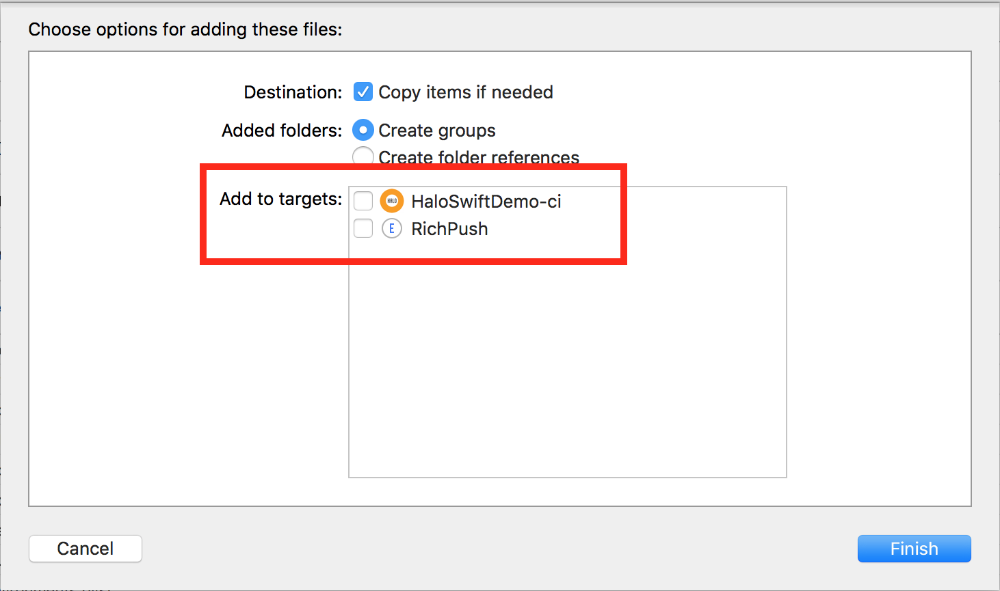
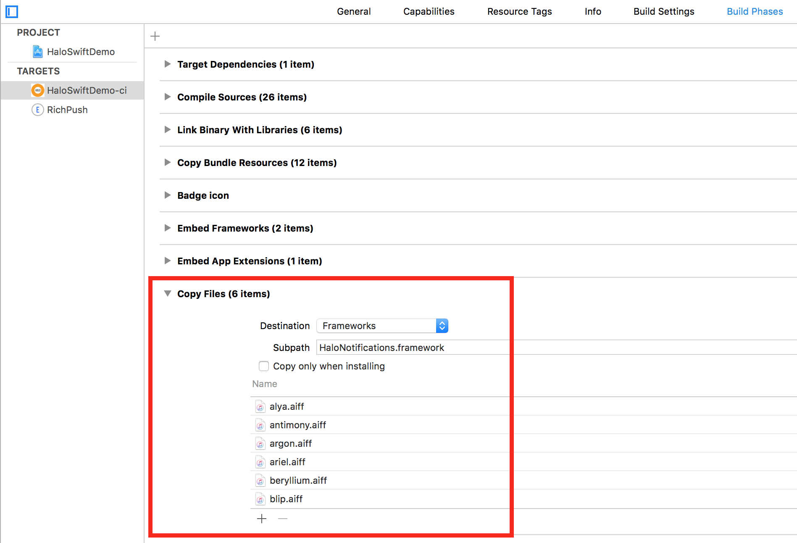

Overview
Configuration
Adding notifications to a HALO-powered application from the SDK point of view is just as simple as instantiating a notifications addon and registering it within the core.
Warning: HALO will handle the download of all necessary dependencies to use the Firebase push notifications SDK. Do not duplicate Firebase libraries on your project or you will not receive correctly push notifications.
But in order to do that, the Framework needs to be added as a dependency to the project:
github 'mobgen/halo-notifications-ios' '{{ site.ios_version }}'
pod 'HaloNotificationsSDK', '{{ site.ios_version }}
Custom sounds
The HALO platform offers the option to customise the push notifications by setting different sounds apart from the default one. Since that one is an optional feature, and in favour of a smaller SDK, the sound files are kept outside of the delivered SDK, leaving the responsibility of adding the needed ones to the developers.
The full pack containing all of the custom sounds offered by the platform can be downloaded here.
After downloading the sounds, the desired ones will need to be copied to the project. Remember to uncheck everything from Add to targets, since we will be specifying a custom location for those files.

The next step will be adding a new Build Phase, where we will define the location where these sound files will be copied. The destination will be inside the notifications framework, and for that, we will add a New Copy Files Phase, where we will choose Frameworks as destination and add HaloNotifications.framework as subpath.
That way, the sound files will get copied to that location and will be used when receiving a push notification specifying one of those custom sounds.

The HaloNotification model
This Notifications SDK, contrary to what iOS does by default, offers a model which makes accessing some of the information contained in the push notifications slightly easier.
| Field | Swift | Obj-C | Description |
|---|---|---|---|
scheduleId | String? | NSString | Id which internally identifies the push notification within the HALO platform |
title | String? | NSString | Title of the push notification |
body | String? | NSString | Content of the message included in the push notification |
icon | String? | NSString | Icon specified for the push notification (Android feature, but also accessible here in case it is needed) |
sound | String? | NSString | Sound of the push notification. It will be automatically handled by the system, but it can be also accessed |
type | HaloNotificationType | HaloNotificationType | Type of the push notification (normal, silent or two factor) |
payload | [AnyHashable: Any] | NSDictionary | "Raw" payload of the push notification as received from the server |
Usage
An already implemented add-on based on Firebase is provided by the SDK. Registering this add-on is then as simple as:
Swift
import HaloNotifications
let notificationsAddon = FirebaseNotificationsAddon()
notificationsAddon.delegate = self
Halo.Manager.core.registerAddon(notificationsAddon)
In order to handle the received notifications, a delegate should be set to the notifications add-on, conforming to the NotificationsDelegate protocol.
public protocol NotificationsDelegate {
func application(_ app: UIApplication,
didReceiveRemoteNotification notification: HaloNotification,
userInteraction user: Bool,
fetchCompletionHandler completionHandler: ((UIBackgroundFetchResult) -> Void)?) -> Void
}
Also, an already implemented custom app delegate is provided by the core (HaloAppDelegate) so that the app delegate can inherit from it. If that's not possible, some methods need to be overwritten to redirect the flow to the Core Manager:
public func application(application: UIApplication,
didRegisterForRemoteNotificationsWithDeviceToken deviceToken: NSData) {
Manager.core.application(application,
didRegisterForRemoteNotificationsWithDeviceToken: deviceToken)
}
public func application(application: UIApplication,
didFailToRegisterForRemoteNotificationsWithError error: NSError) {
Manager.core.application(application,
didFailToRegisterForRemoteNotificationsWithError: error)
}
public func application(application: UIApplication,
didReceiveRemoteNotification userInfo: [NSObject : AnyObject],
fetchCompletionHandler completionHandler: (UIBackgroundFetchResult) -> Void) {
Manager.core.application(application,
didReceiveRemoteNotification: userInfo,
fetchCompletionHandler: completionHandler)
}
Obj-c
#import <Halo/Halo-Swift.h>
#import <HaloObjC/HaloObjC-Swift.h>
#import <HaloNotifications/HaloNotifications-Swift.h>
HaloNotificationsAddon *notifAddon = [HaloNotificationsAddon new];
notifAddon.delegate = self;
[HaloManager.core registerAddon:notifAddon];
Since in Objective-C there is a restriction by which the app delegate cannot extend from another class, a mandatory extra step is needed in order for the notifications to work. Some of the flow must be redirected through the core manager of HALO:
- (void)application:(UIApplication *)application
didRegisterForRemoteNotificationsWithDeviceToken:(NSData *)deviceToken {
[HaloManager.core application:application
didRegisterForRemoteNotificationsWithDeviceToken:deviceToken];
}
- (void)application:(UIApplication *)application
didFailToRegisterForRemoteNotificationsWithError:(NSError *)error {
[HaloManager.core application:application
didFailToRegisterForRemoteNotificationsWithError:error];
}
- (void)application:(UIApplication *)application
didReceiveRemoteNotification:(NSDictionary *)userInfo
fetchCompletionHandler:(void (^)(UIBackgroundFetchResult))completionHandler {
[HaloManager.core application:application
didReceiveRemoteNotification:userInfo
fetchCompletionHandler:completionHandler];
}
After doing that, the notifications can be handled using the delegate method:
- (void)application:(UIApplication *)app didReceiveRemoteNotification:(HaloNotification *)notification userInteraction:(BOOL)user fetchCompletionHandler:(void (^)(UIBackgroundFetchResult))completionHandler
Configuring the project in Firebase
In order for the notifications to work, the project must be set up in Firebase, the system HALO uses to send the push notifications. A detailed guide provided by Google can be found here.
Troubleshooting
- Since the Notifications SDK relies on Firebase, the location of those SDKs (downloaded automatically as dependencies)
will have to be added to the
Header Search Pathsunder the project build settings. Probably something like$(SRCROOT)/Carthage/Build/iOS.

Enable notifications usage
When a new notification is received on a device, the SDK will send a request to HALO reporting notification updates. There are three different events we can report: receipt, open and dismiss. To enable this feature you must enable directly on the notification addon. This feature is only availabe on iOS 10+ versions.
Warning: Remember to set a valid notification category on the push notification. For the following example we will use this configuration:
"click_action" : "dismiss_halo"
if #available(iOS 10.0, *) {
UNUserNotificationCenter.current().delegate = self
notificationsAddon.enableNotificationEvents(userNotificationCenter : UNUserNotificationCenter.current(), notificationCategory: "dismiss_halo")
}
You only have to override the following function to notify halo that a notification was dismissed or opened and HALO will manage everything for you.
@available(iOS 10.0, *)
func userNotificationCenter(_ center: UNUserNotificationCenter, didReceive response: UNNotificationResponse, withCompletionHandler completionHandler: @escaping () -> Void) {
Manager.core.userNotificationCenter(center, didReceive: response, core: halo, fetchCompletionHandler: completionHandler)
}